2025年11月30日，由墨尔本中国高校校友会联盟（MCUAA）主办，大连理工大学墨尔本校友会、电子科技大学澳洲校友会承办的“2025墨尔本中国高校校友高尔夫联谊赛”在 Heritage Golf 球场顺利举行。来自39所高校的96名球友组成16支队伍，采用18洞同时开球（shotgun）的方式，在风雨、阳光与彩虹交替的墨尔本天气中，完成了一场既充满挑战又洋溢温度的高校高尔夫盛会。
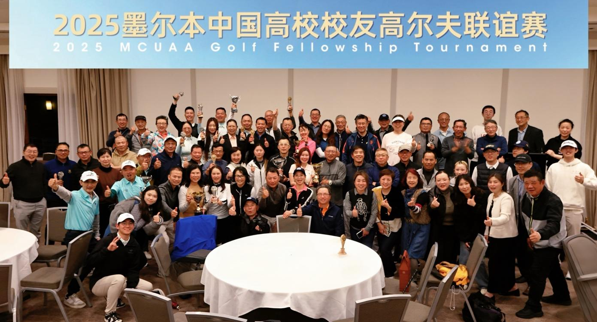
本次联谊赛的参赛选手来自在墨尔本生活、工作的中国各高校校友及其家属。赛事以“以球会友，以赛增谊”为主题，旨在为各高校校友搭建一个以球会友的平台，促进不同院校、不同专业背景之间的交流与合作。参赛球友涵盖工科、商科、理科、医科等多个学科领域，既有首次参与赛事的新球友，也有经验丰富的“老球手”，在同一片球场上以球会友、切磋技艺。

12点半开球时，球场大风阵阵，细雨不时洒落，给每一杆都凭添了难度。临近下午乌云再度压境，短时降雨考验着大家的节奏与心态；而随着云层逐渐散开，阳光重新洒在果岭之上，球场上空甚至挂起了彩虹。正所谓“一天看尽风、雨、阳光和彩虹”，典型的“墨尔本一日四季”也为本次联谊赛增添了独特记忆。
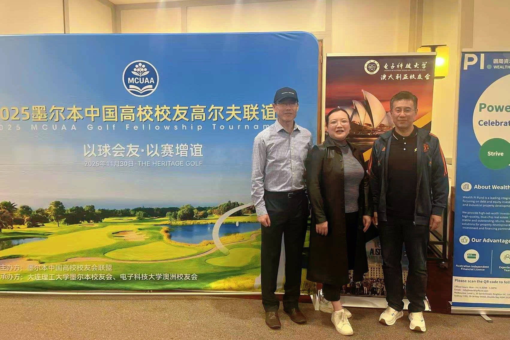
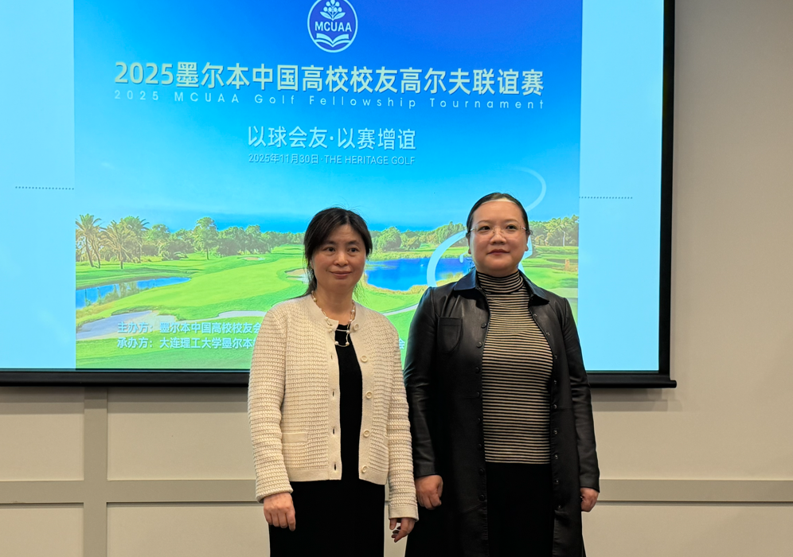
在这样的天气条件下，所有队伍依旧坚持打完全程18洞，既展现了良好的竞技状态，也体现出高校人不轻言放弃的韧性与担当。球手们在球道上相互鼓励，在宴客厅中交流心得，从握杆技巧聊到球场策略，从各自的留学与工作经历聊到未来职业发展的规划，联谊赛真正实现了“以球会友，以赛增谊”的初衷。
赛果揭晓
全部队伍完成18洞比赛后，举行了热烈的颁奖仪式。组委会根据当日成绩和表现，评选出了以下奖项：
总杆成绩
- 冠军队伍：广西高校队
- 亚军队伍：清华大学队
- 季军队伍：大西安联队
净杆
- 冠军队伍：华南理工大学队
- 亚军队伍：广东外语外贸大学队
- 季军队伍：浙江大学队
个人成绩
- A段 总杆冠军：黄小昌；净杆冠军：思建军
- B段 总杆冠军：David Chen；净杆冠军：秦永贵
- C段 总杆冠军：Xinbiao Chen；净杆冠军：Paul Wang
- D段 总杆冠军：Winney；净杆冠军：袁继刚
女子组
- 总杆冠军：舒曼
- 净杆冠军：田惠平
特别奖
- 最远距离奖：XinBiao Chen
- 最近旗杆奖：张云
- 女子最近旗杆奖：Jessy Zhou
获奖队伍与球员在热烈掌声中依次上台，由MCUAA及承办方代表颁发奖杯与礼品，并与到场嘉宾合影留念。颁奖现场气氛轻松愉快，不少球友在互相祝贺之余，也相约“下次再战”，希望在下一届赛事中继续提升成绩、再创佳绩。
赛后，组委会对全体参赛选手以及为赛事提供支持的各高校校友组织表示衷心感谢，同时向负责统筹、主持、计分、摄影等工作的志愿者团队致以高度肯定。正是所有参与者的投入与配合，才让这场在风雨、阳光和彩虹中进行的高校高尔夫联谊赛得以顺利、圆满地画上句号。
本届联谊赛已成功收杆，但高校之间的交流与合作不会停杆。MCUAA表示，未来将继续推动高校高尔夫活动的常态化与品牌化，期待在下一次开球时，迎来更多高校、更多球友的加入，在墨尔本的球场上续写挥杆与友谊的新篇章。
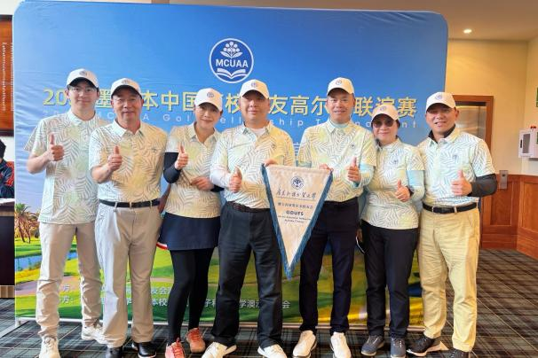
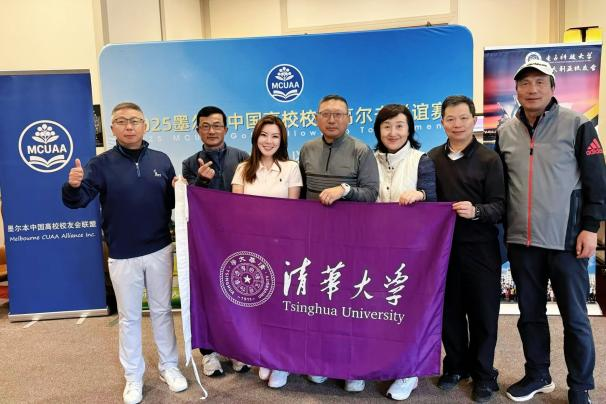
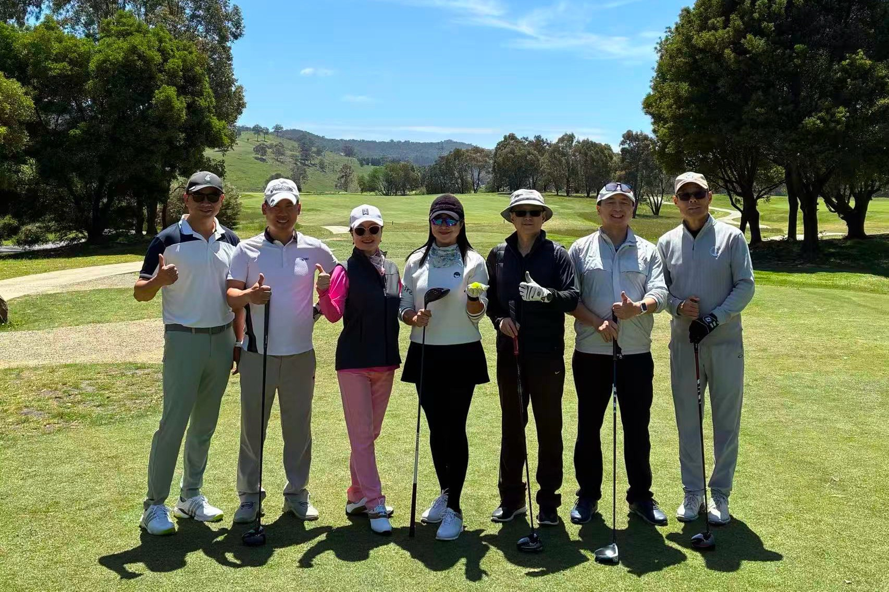
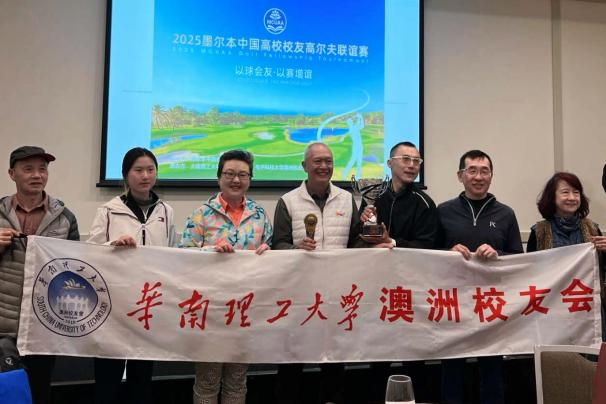
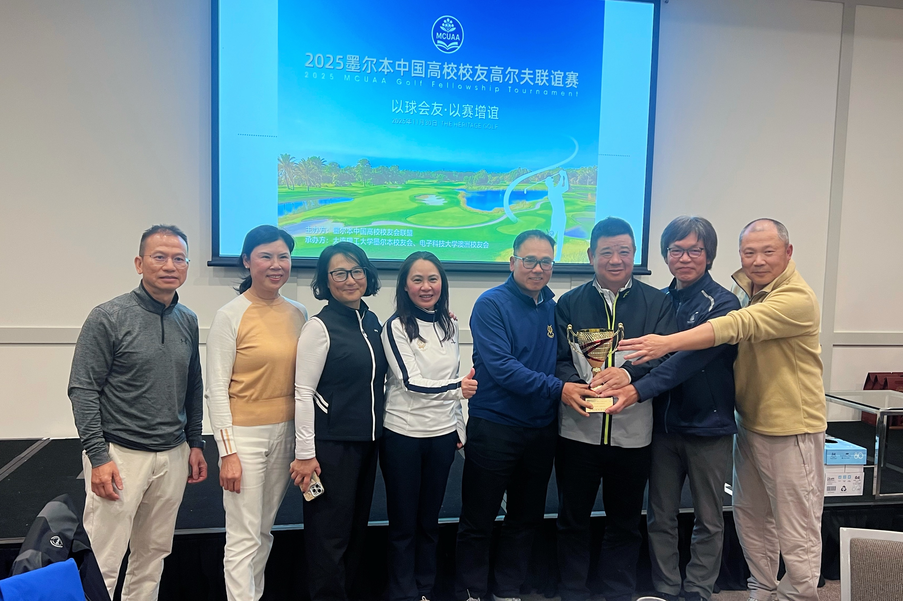

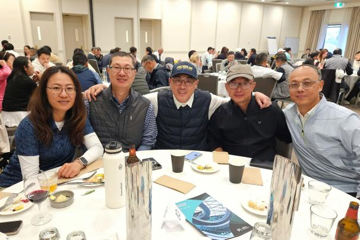
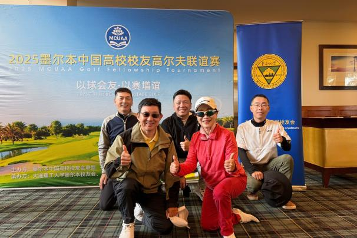
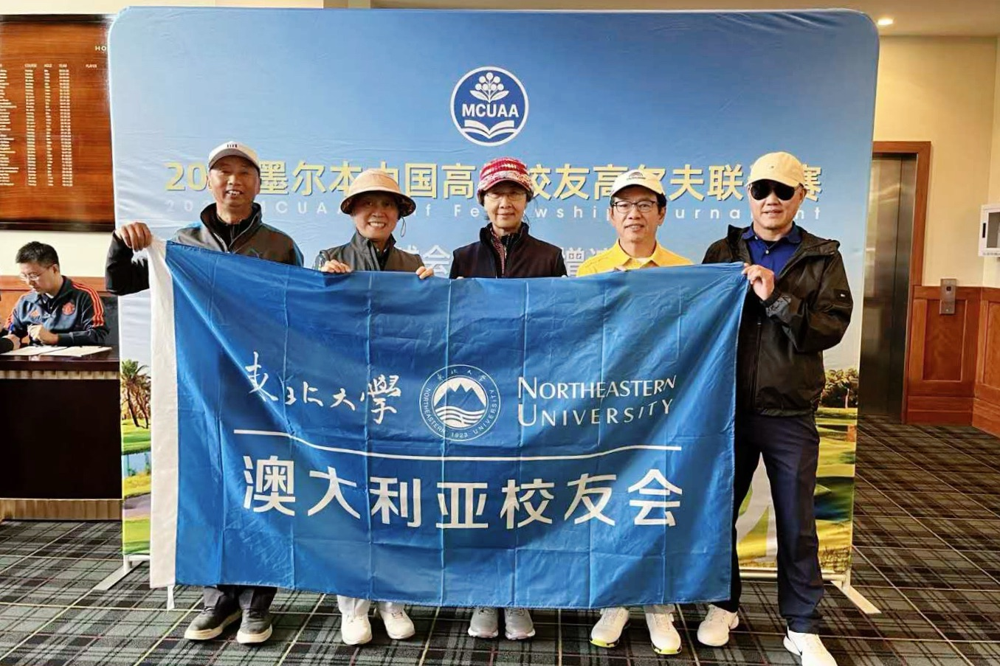
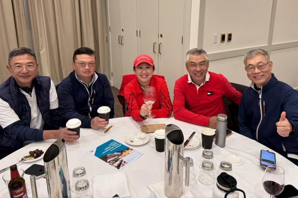
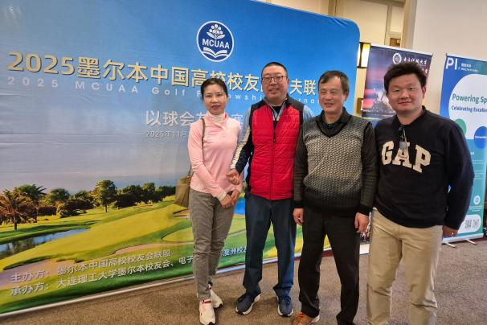
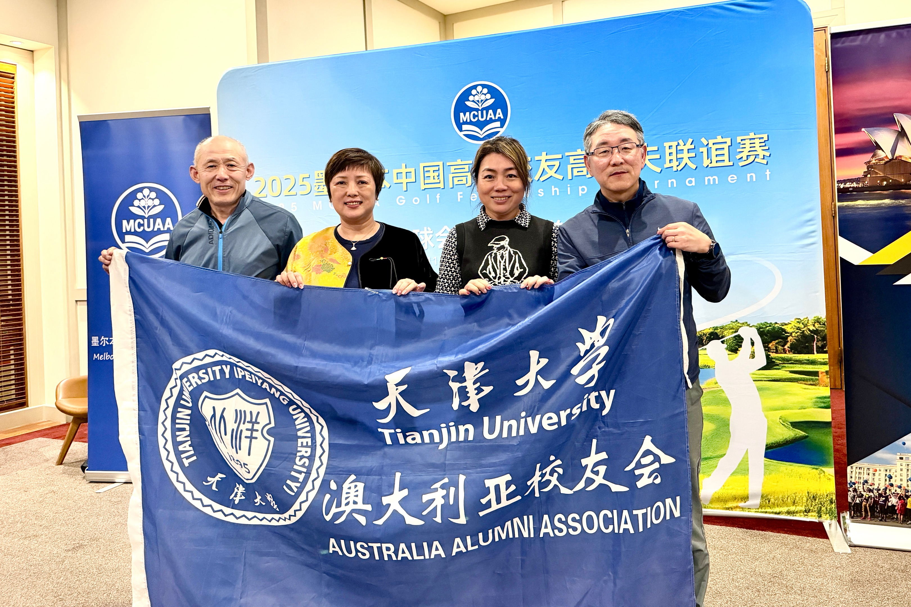
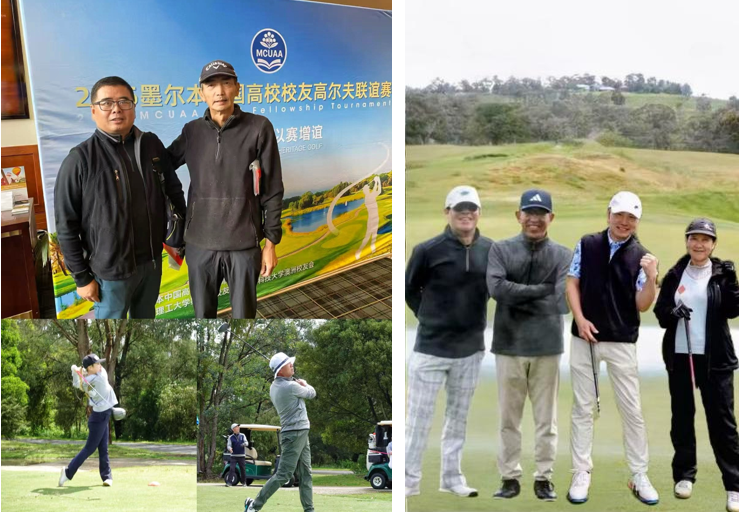
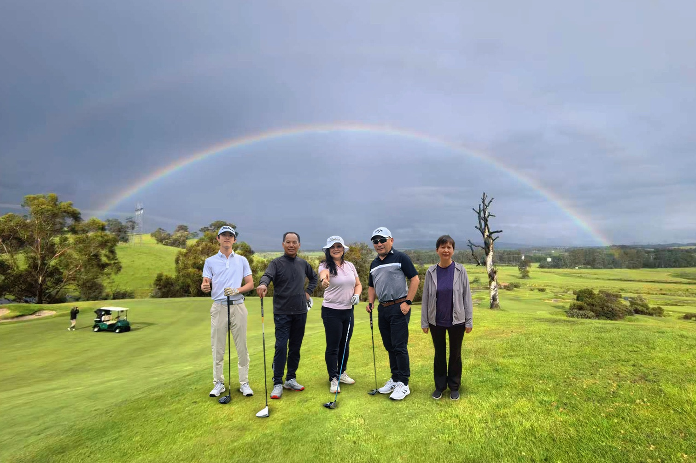
39所参与高校
（按校名拼音排序）
- 北京航空航天大学、北京化工大学
- 大连理工大学、电子科技大学
- 东北大学、东南大学
- 广东外语外贸大学、广西大学
- 广西国际商务学院、广西科技大学
- 广西医科大学、桂林旅游高等专科学校
- 河北医科大学、华东理工大学
- 华东师范大学、华南工业大学
- 华南理工大学、华中科技大学
- 暨南大学、兰州大学
- 南京大学、南京理工大学
- 清华大学、山东大学
- 沈阳医药大学、四川大学
- 天津财经大学、天津大学
- 天津师范大学、厦门大学
- 西安电子科技大学、西安交通大学
- 西安外国语大学、西北工业大学
- 西南财经大学、浙江大学
- 浙江湘湖师范大学、中南大学
- 中央财经大学
致谢
感谢圆周资本、中信移民、微米金融、AUCN GOLF CLUB、Pettavel 佰德福酒庄、China Amazing、Greeneco Energy、国窖1573、Yarra Dragon等对本次高尔夫联谊赛的倾力相助。
感谢每一位参赛校友、家属、志愿者的参与与付出。
感谢墨尔本中国高校校友会联盟 MCUAA 与各成员校友会的大力支持。
摄影：苏晨 何斌武 丁宸汀